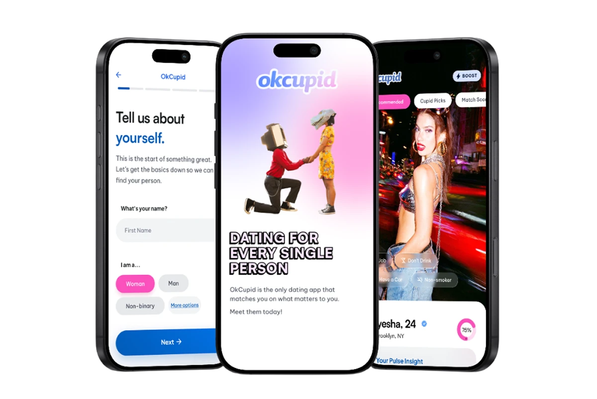
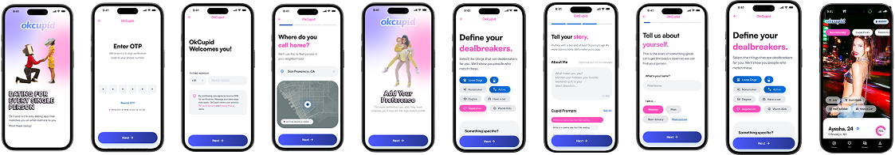
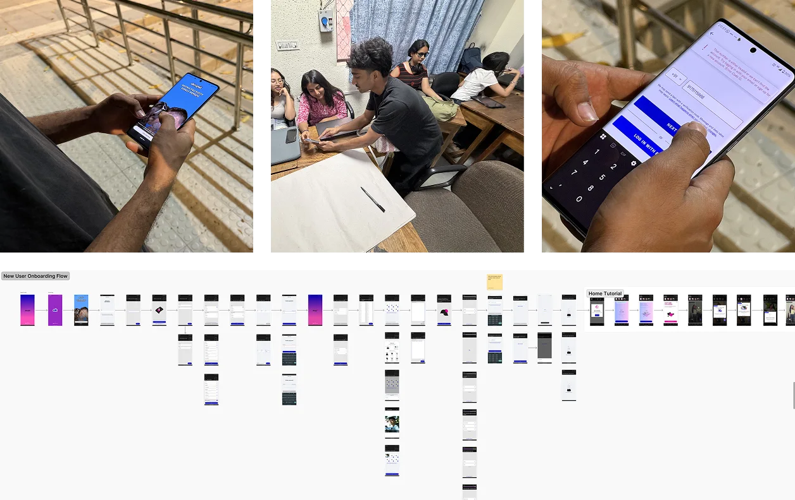
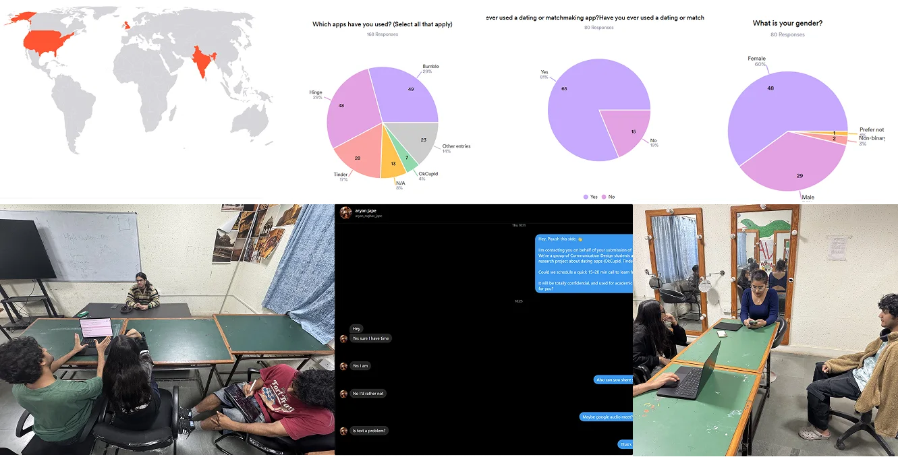
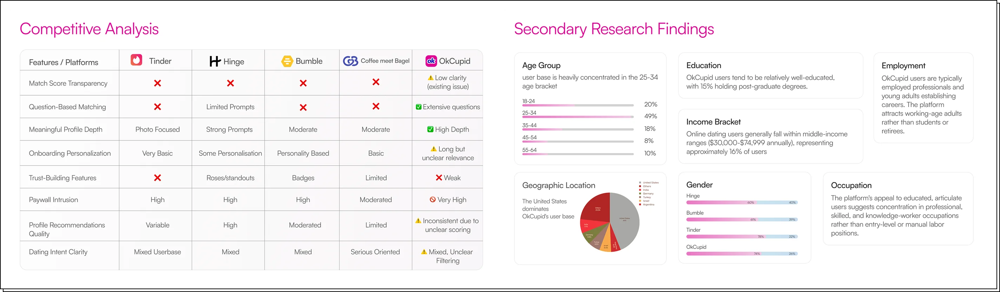
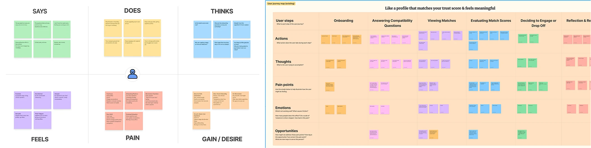
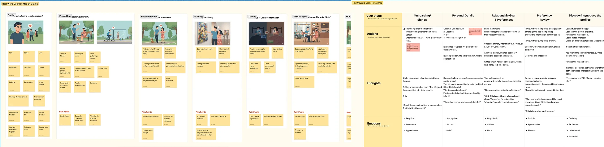
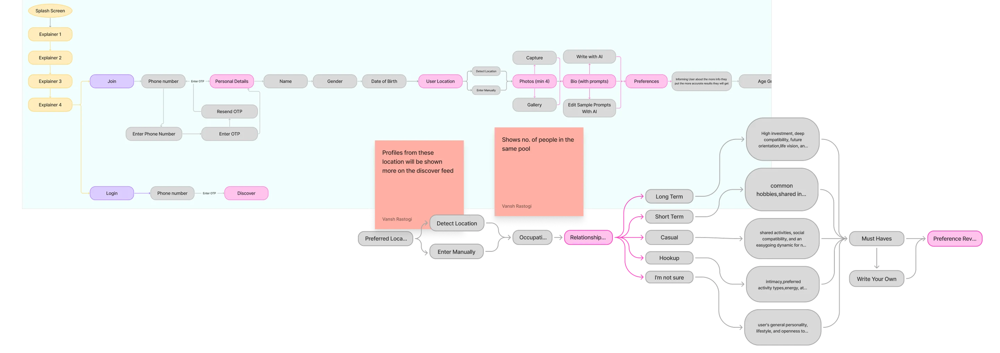
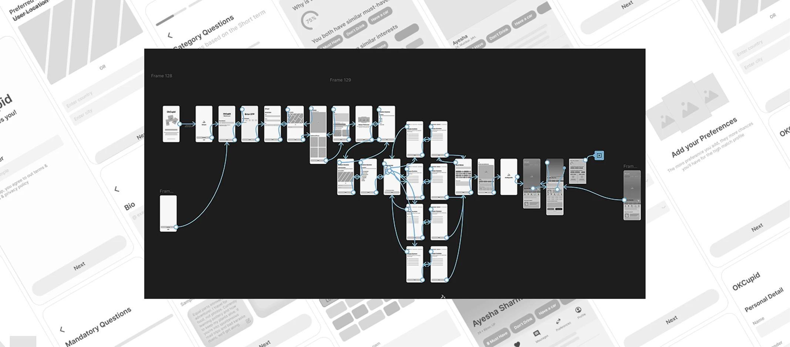
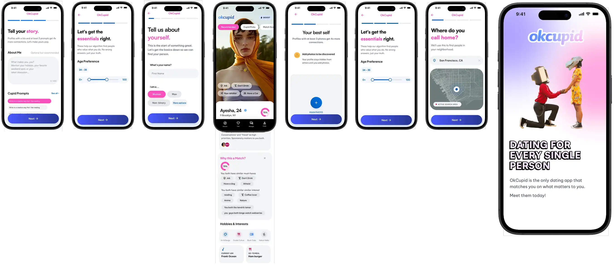
Structured onboarding with clear sections, supported by splash screens and guidance
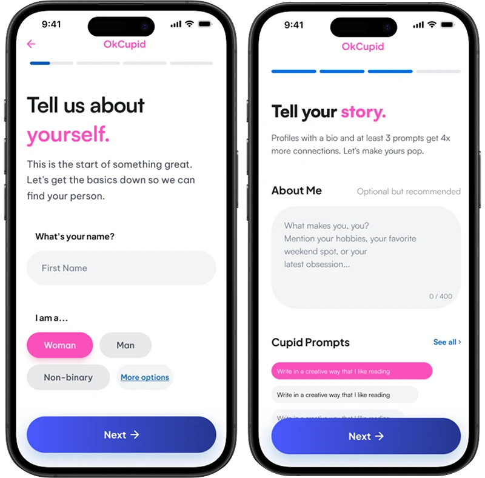
Category-based questions to make it more relevant and meaningful.
A final review step allows users to check and edit their profile.
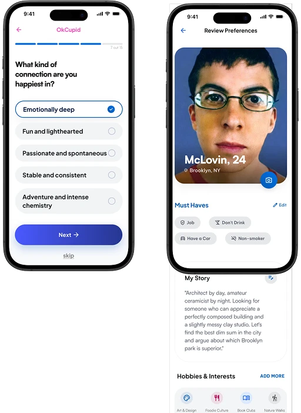
Added “Why this is a match” alongside the match percentage, visible on profile cards to give the match score more depth and meaning.
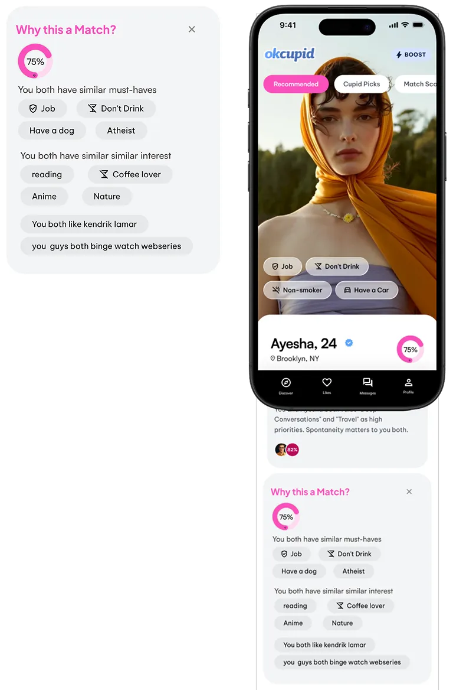
Match relevance was improved by showing how many users share similar preferences and location.
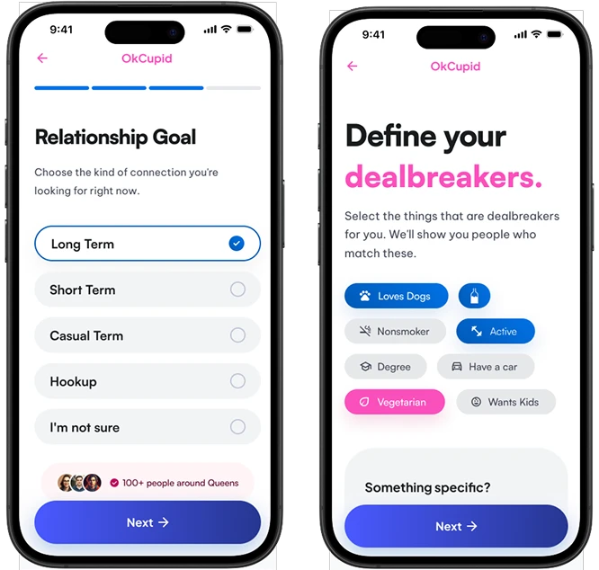
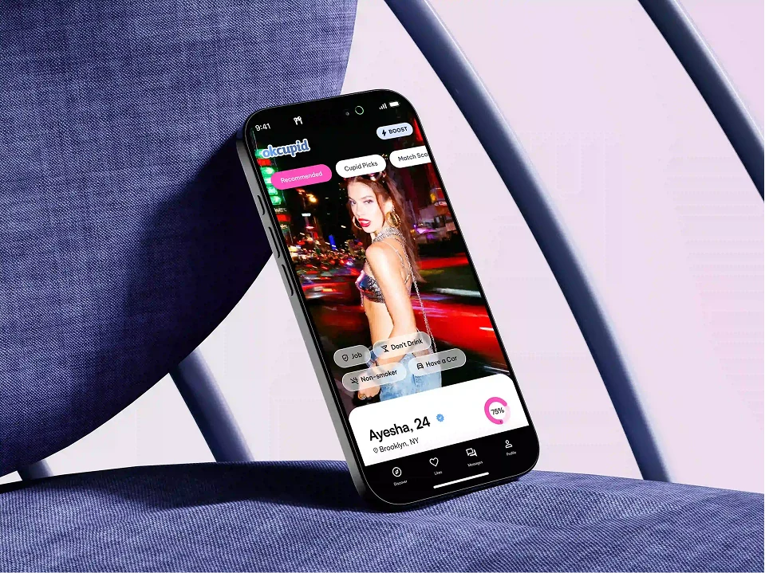
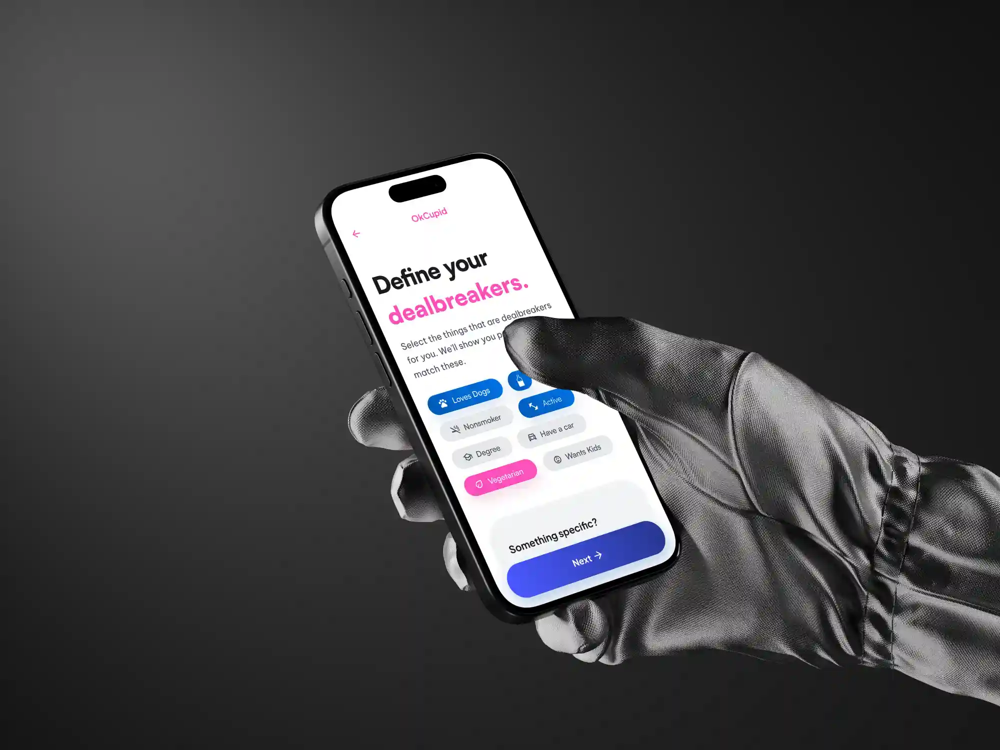